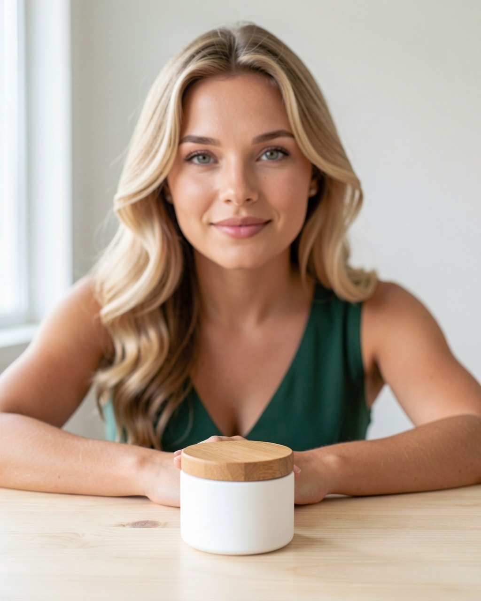
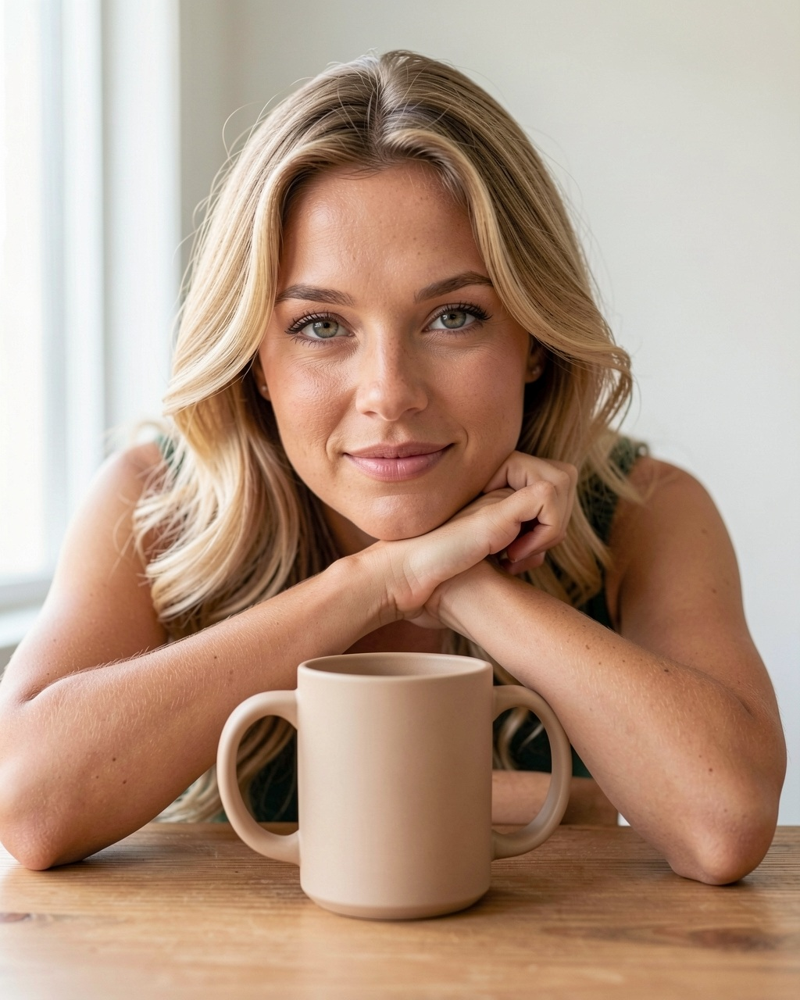
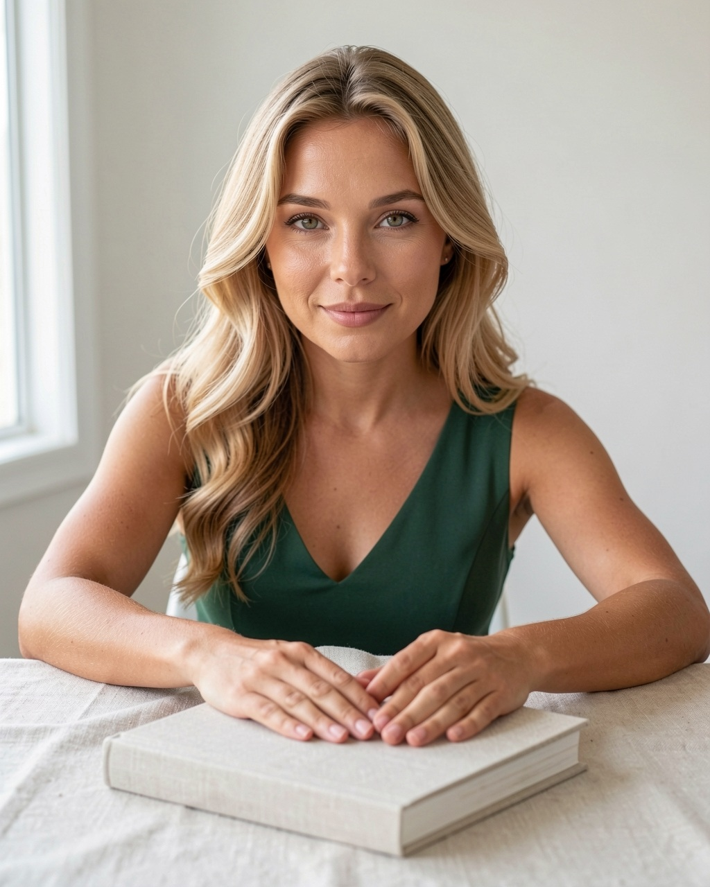
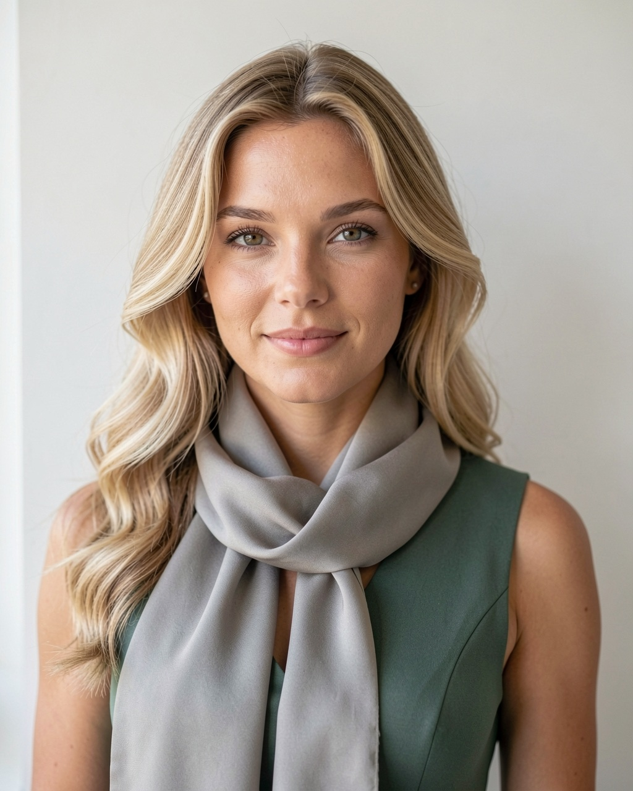
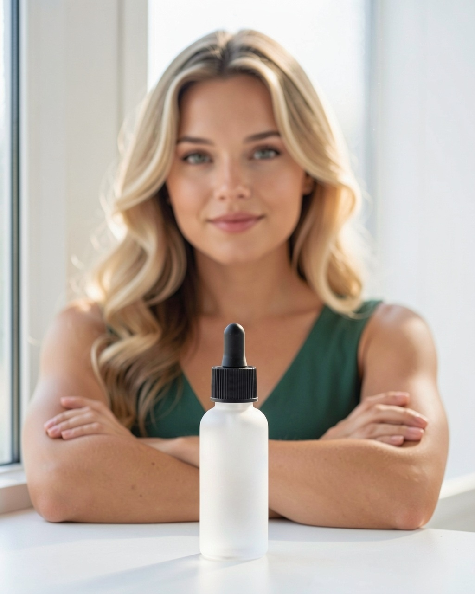
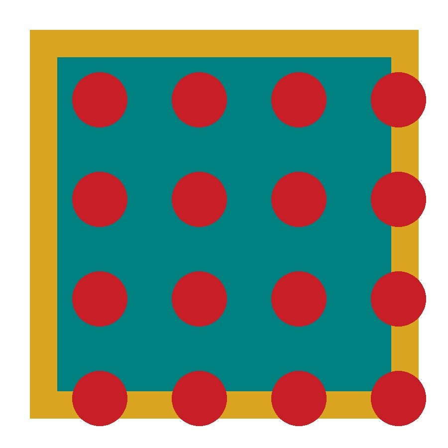
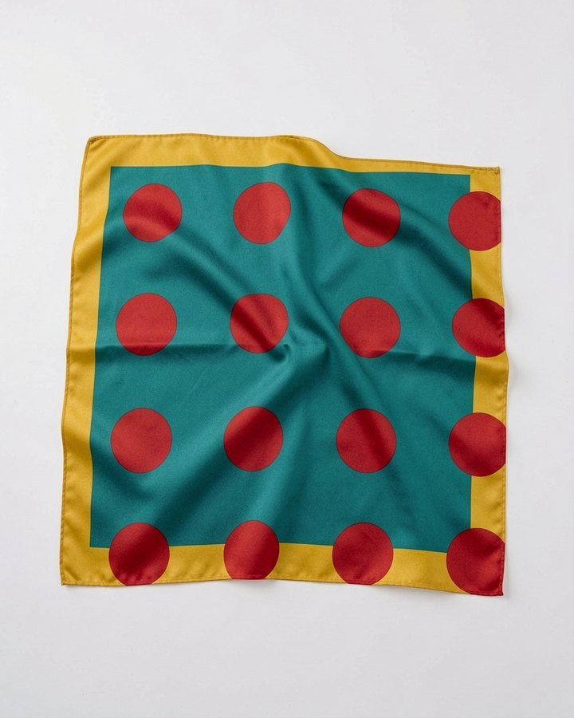
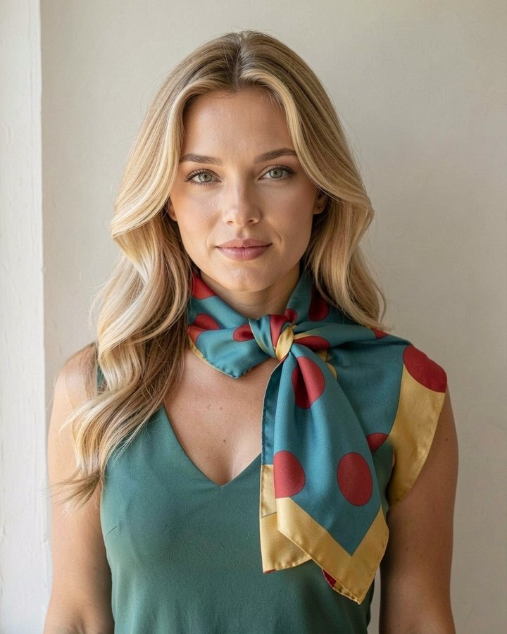

Imagen de producto · Madrid
Allie es una modelo generada con inteligencia artificial. Sostiene tu producto, lo lleva puesto o lo acompaña, en el sitio y con la luz que pidas, sin sesión, sin agenda y sin derechos de imagen que caduquen. El mismo rostro en todas las entregas, esta semana y dentro de un año.
Contenido generado con IA · Allie no es una persona real
Muestrario
Productos genéricos y sin marca, a propósito: en un encargo real va el tuyo.





La prueba
La duda razonable es si la máquina copia el producto o se inventa otro con un aire parecido. Para responderla hace falta un producto que no exista: de uno real podría saberse la respuesta de antemano.
Así que dibujé uno. Pañuelo verde azulado, borde mostaza, círculos rojos; no se vende en ninguna parte. Estos son los tres pasos, sin retoque entre uno y otro.



Los lunares no caen en el mismo sitio exacto, igual que no caerían en un pañuelo de verdad anudado al cuello. Lo que se conserva son los tres colores, el borde y el motivo. Donde esto no funciona es con logotipos y con texto impreso: ahí lo digo antes de aceptar el encargo.
Lo que no hago
No dirá que una crema le ha cambiado la piel ni que algo le sabe bien, porque no tiene piel ni paladar. La normativa de la FTC de 2024 prohíbe los testimonios de personas inexistentes, y en España eso es competencia desleal por endoso falso.
Cada entrega va marcada como contenido generado con IA, en los metadatos del archivo y a la vista. No es una concesión: es lo que exige el artículo 50 del reglamento europeo de IA, en vigor desde agosto de 2026, y protege a tu marca tanto como al que mira.
| Formato | Detalle |
|---|---|
| Imagen fija | 1024 × 1280 px, JPEG. Vertical 4:5 y cuadrado 1:1 del mismo encuadre. |
| Vídeo corto | 8 a 15 segundos, 1080 × 1920, a partir de cuatro imágenes de la misma serie. |
| Variaciones | Mismo producto, distinto sitio, luz y encuadre, sin repetir sesión. |
| Uso | Web, ficha de producto, redes y publicidad de pago, sin límite de tiempo. |
| Marcado | Declaración de IA visible y metadatos IPTC en cada archivo. |